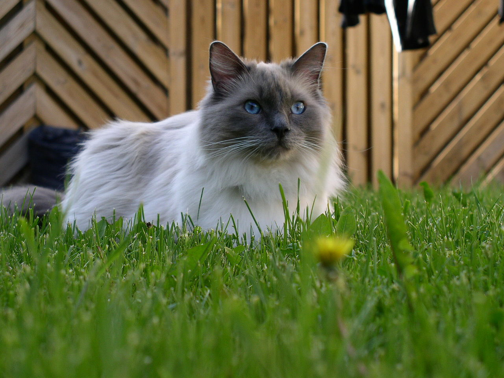

Parallax-Effect Cat Edition
Ragdoll-Katze
Die Stammmutter der Ragdoll ist eine Katze mit Namen Josephine. Sie war eine „angoraähnliche“ Freigängerin, die einer Nachbarin von Ann Baker in Kalifornien gehörte. Aus einem Wurf dieser Katze bekam Ann Baker einen Kater, der einer „Birma-Katze“ ähnlich sah. Mit diesem Kater und nicht weiter bekannten Tieren baute Ann Baker eine Linienzucht auf und gab der so von ihr neu erzüchteten Rasse den Namen Ragdoll, was auf Deutsch etwa Stoffpuppe bedeutet, manchmal auch Lumpenpuppe genannt. Den Namen wählte Ann Baker aufgrund der Tatsache, dass sich ihre Katzen einfach schlaff hängen ließen, wenn man sie hoch nahm – wie eine aus Stofffetzen gefertigte Lumpenpuppe. Durch diese Verhaltensveränderung gab es auch Gerüchte, dass diese Rasse ein verändertes Schmerzverhalten hätte, was manche dazu verleitete, das Schmerzverhalten der Tiere zu testen. Bei tiergerechten Untersuchungen stellte sich dann heraus, dass es keinerlei Veränderungen im Schmerzverhalten gibt.
Nach dem Standard der Fédération Internationale Féline ist die Ragdoll eine massive, große Katze mit mittlerem Knochenbau und muskulösem Körper. Sie hat eine kräftige Gesamterscheinung. Der Kopf soll von mittlerer Größe sein, breit, keilförmig zulaufen und zwischen den Ohren flach sein. Sie hat mittelgroße Ohren, die runde Spitzen haben und weit auseinander stehen. Der Hals ist kurz und kräftig. Die Beine sind mittellang, die hinteren etwas länger, wodurch die Rückenlinie nach vorne abfällt. Der Schwanz ist lang, gut behaart und buschig. Das dichte Fell ist von mittlerer Länge, hat eine weiche, seidige Struktur und liegt am Körper an.